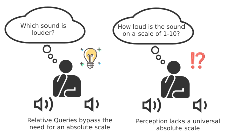
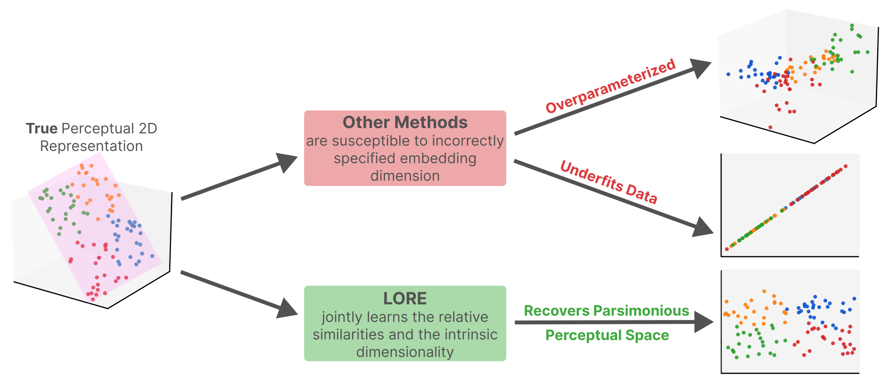
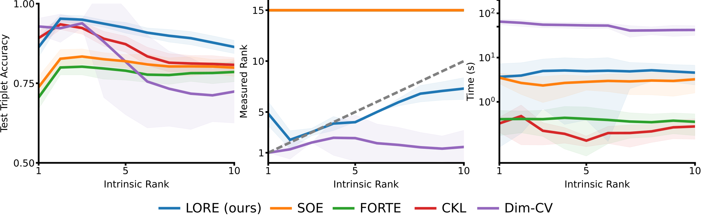
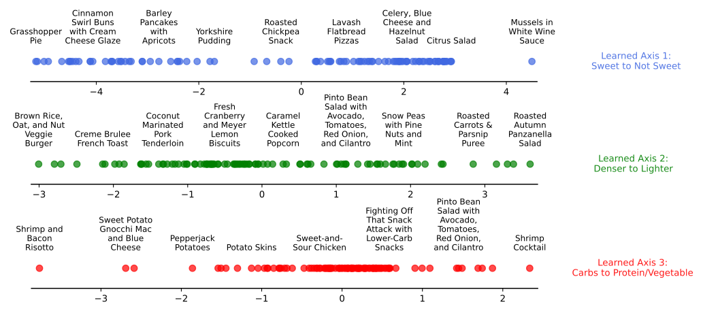

Based on our ICLR 2026 paper: “LORE: Jointly Learning The Intrinsic Dimensionality and Relative Similarity Structure from Ordinal Data”
Measuring and mapping human perception quantitatively is hard. If you want to measure physical distance, you use a ruler. But if you want to measure how “sweet” a cake is, or how “aesthetic” a painting is, no absolute ruler exists.
Historically, researchers relied on absolute queries, like asking subjects to rate a stimulus on a 1-5 Likert scale. But absolute scales are fundamentally flawed: my “moderately sweet” might be your “cloyingly sweet”. Moreover, humans are quite inconsistent in their absolute judgments giving very different answers to the same questions at different times [1]. To get around the lack of an absolute ruler, early psychophysics [2], [3], [3] and later, machine learning [4], [5], [6], leveraged relative queries that ask subjects to compare stimuli with each other instead of rating them on an absolute scale. (Check out this blog post for more details on how relative queries allowed psychophysics to escape the absolute ruler.) However, converting these relative judgements into a latent geometry is non-trivial.
The field developed Multidimensional Scaling (MDS) algorithms [7] (which give you exact solutions but require the entire pairwise distance matrix) and Ordinal Embedding algorithms (OEs) [5], [6], [8] (which are much more data efficient but are nonconvex with little guarantees). These methods allowed researchers to build multidimensional perceptual maps instead of just rulers. from relative queries of the form “Is stimulus A more similar to B than to C?”.

Relative Scales are more reliable than absolute scales. Human perception does not have an absolute scale to measure against like physical concepts like length or weight. However, humans possess a high sensitive comparison mechanism to compare any two stimuli via a relative scale. In this example, it is much easier to say which sound is louder rather than saying how loud each sound is.
But there’s a massive catch. Both MDS and OEs require you specify the dimensionality of the space you want to embed your perceptual space onto.
Consider the following thought experiment. Imagine that you are trying to learn the perceptual geometry of taste of various foods. How many dimensions do you thinkg you need to capture the geometry of taste? Sweetness, sourness give us two. Texture adds a third. Maybe temperature adds a fourth? Regardless of your intuition in choosing the dimensionality, you are making an arbitrary choice and you are essentially guessing what the geometry of the space looks like. This can be untenable in situtations where you aim to discover the dimensionality of the space from data for percepts that you do not know anything about, which is a lot of psychology!
MDS and OEs require you to specify the dimensionality of the space you want to embed your perceptual space, the intrinsic rank before you even start learning the geometry of the space. This forces you to a blind guessing game leading to two major problems:
Underfitting: If you guess too few dimensions, you crush complex relationships. The model might combine “spicy” and “hot temperature” into a single confusing axis.
Overparameterizing: If you play it safe and guess 15 dimensions, the algorithm will happily spread the data across all of them. A 15D model might satisfy all your triplet comparisons perfectly, but it fractures simple concepts across multiple axes, making the resulting map totally uninterpretable to scientists.
Scientific discovery demands Occam’s Razor: we want the simplest model that explains the data. A 2D taste map is infinitely more useful than a 10D one if the underlying percept only varies in two ways. Yet, historically, we had no scalable way to let the data tell us its own complexity.

LORE jointly learns both the intrinsic dimensionality and relative similarities by balancing dimensionality with similarity constraints.: Other methods require the embedding dimension to be chosen apriori, making them susceptible to underfitting and overparameterizing
To solve this problem, we introduce LORE (Low Rank Ordinal Embedding), a new OE algorithm that jointly learns the intrinsic rank and relative similarities directly from the data.
The main intuition behind LORE is to balance learning the relative similarity structure (that most OEs do quite well) with learning the dimensionality/intrinsic rank of the learned embedding matrix. Since strict rank minimization is NP-Hard [9], most normally use the convex relaxation, the nuclear norm [10].
However, there is a problem: the nuclear norm uniformly shrinks all singular values [11], [12]. While this works for standard matrix completion, it often fails to recover the true intrinsic rank of perceptual spaces because it over-penalizes the largest, most important singular values that actually define the space leading to solutions with low magnitude of singular values but not necessarily lower rank solutions [13].
Instead LORE regularizes using the nonconvex Schatten \(p\) Quasi-norm (\(0 < p < 1\)) which penalizes the larger singular values less severely [13], [14]. This allows LORE to recover the dominant perceptual dimensions while aggressively crushing the noise.
Specifically, the objective is \[\begin{array}{rlr} \underset{\mathbf{Z}}{\text{min}}\text{ }\Psi(\mathbf{Z}) & = \sum\limits_{(a,i,j) \in T}\log(1 + \exp(1 + d\left( \mathbf{Z}_{a,:},\mathbf{Z}_{i,:} \right) - d\left( \mathbf{Z}_{a,:},\mathbf{Z}_{j,:} \right)))) & + \sum_{i = 1}^{\min\left\{ N,d' \right\}}\sigma_{i}\left( \mathbf{Z} \right)^{p}. \end{array}\]
The first term is an ordinal embedding objective (smoothed to allow for easier optimization) and the second term is the nonconvex Schatten \(p\) Quasi-norm (\(0 < p < 1\)) regularization term. Though the objective is easily defined, optimization is tricky. Both terms here are non-convex and there exists no closed form solution. To overcome the difficulty of optimization, we leverage iteratively reweighted methods [15] which are more robust compared to direct stochastic gradient descent. Even with the inherent non-convexity, this guarantees convergence to a stationary point. And because stationary points in OE landscapes are often nearly as good as global optima [16], [17], LORE reliably yields robust embeddings.
The real challenge in evaluating LORE to existing OEs is that for most human perceptual datasets, a true intrinsic rank is unknown. Therefore we need to leverage synthetic data where we do implicitly know the intrinsic rank. We benchmarked LORE against the state-of-the-art OEs on a range of synthetic data using across synthetic data, LLM-generated proxy perceptual spaces (using SBERT [18] to model human alignment [19]), and real human crowdsourced datasets. In the following plot, comparing LORE to SOTA OEs on perceptual similarity of a large language model its very impressive to see that LORE was the only method that accurately tracked and recovered the true intrinsic rank while maintaining near-optimal test triplet accuracy.

Only LORE can learn the true intrinsic rank while maintaining high accuracy on synthetic data.
But the most exciting results came from real, noisy human data, including the Food-100 dataset [20] which collected crowdsourced ratings of 100 different food items in terms of perceived similarity of taste. Given a maximum dimension of 15 for Food-100, standard OEs used all 15 dimensions, creating a completely tangled perceptual space. LORE automatically compressed the embedding down to roughly 3.3 dimensions. While we do not know the true intrinsic rank of Food-100, LORE’s embedding is semantically meaningful suggesting that Food-100’s intrinsic rank might be around 3-4 dimensions. Similar results for other datasets can be seen in the paper.
Method |
Test Acc. |
Rank |
Time (s) |
|---|---|---|---|
LORE |
\(82.45\) \(\pm 0.27\) |
\(3.3\) \(\pm 0.47\) |
\(6.64\) \(\pm 3.90\) |
SOE |
\(82.34\) \(\pm 0.32\) |
\(15\) \(\pm 0.00\) |
\(27.09\) \(\pm 1.38\) |
FORTE |
\(81.73\) \(\pm 0.46\) |
\(15\) \(\pm 0.00\) |
\(6.34\) \(\pm 0.52\) |
t-STE |
\(82.79\) \(\pm 0.24\) |
\(15\) \(\pm 0.00\) |
\(40.93\) \(\pm 20.14\) |
CKL |
\(82.75\) \(\pm 0.20\) |
\(15\) \(\pm 0.00\) |
\(18.41\) \(\pm 7.89\) |
Dim-CV |
\(77.67\) \(\pm 0.02\) |
\(1.47\) \(\pm 0.51\) |
\(1721.9\) \(\pm 26.71\) |
Even better, without any semantic supervision, LORE’s learned axes were highly interpretable:

LORE’s learned axes are semantically interpretable on the Food-100 dataset. [20]
Axis 1: Sweet to Savory
Axis 2: Dense to Light
Axis 3: Carb-heavy to Protein/Vegetable
When we model human perception, we aren’t just trying to maximize predictive accuracy on a holdout set; we are trying to uncover the latent geometry of the mind. By jointly inferring relative similarities and intrinsic dimensionality, LORE removes the need for arbitrary guessing of the true intrinsic geometry, ensuring we neither underfit nor overparameterize the underlying perceptual space.
Code to reproduce our results and for your own ordinal datasets is available at https://github.com/vivek2000anand/lore_iclr. We are in progress of integrating LORE into the open source python comparison based machine learning library cblearn which would make calling LORE as easy as a call to a standard sciki-learn model. Stay tuned!